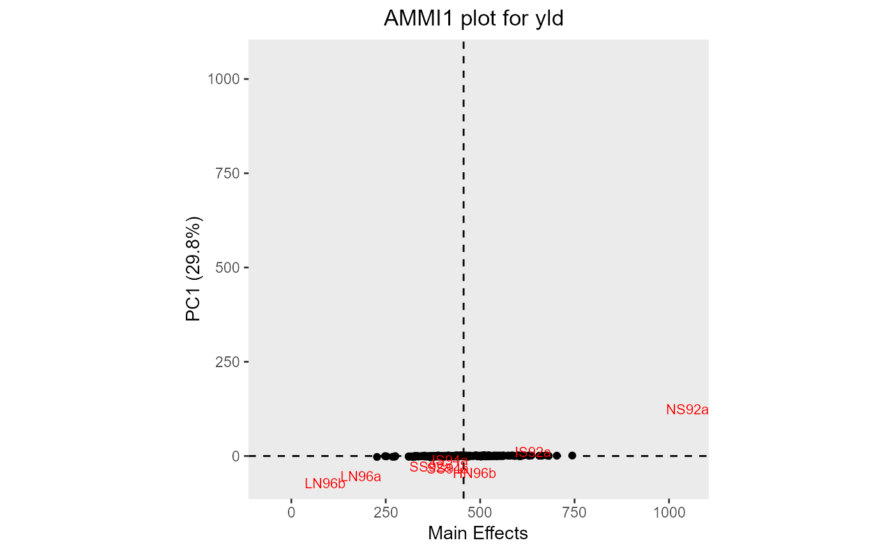
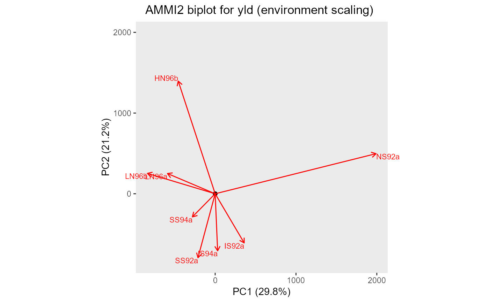

Two types of biplot can be made. A plot of genotype and environment
means vs PC1 (AMMI1) or a biplot of genotypes and environment interaction
with PC1 and PC2 (AMMI2).
If the AMMI analysis was done by year, a separate plot will be made for
every year in the data. For some years the number of principal components
may be lower than the number specified on the secondary axis. If this is the
case this year is skipped when plotting. If this happens for all years the
function returns an error.
# S3 method for AMMI plot( x, ..., plotType = c("AMMI1", "AMMI2", "GGE2"), scale = 1, plotGeno = TRUE, colorGenoBy = NULL, colGeno = NULL, sizeGeno = 0, plotConvHull = FALSE, plotEnv = TRUE, colorEnvBy = NULL, colEnv = NULL, sizeEnv = 3, envFactor = 1, primAxis = "PC1", secAxis = "PC2", title = NULL, output = TRUE )
Arguments
| x | An object of class AMMI |
|---|---|
| ... | Not used. |
| plotType | A character string indicating which plot should be made. Either "AMMI1" for an AMMI1 plot (genotype and environment means vs PC1) or "AMMI2" for an AMMI2 biplot (genotypes and environment interaction with PC1 and PC2) respectively. For results of a GGE analysis only an GGE2 biplot can be made and plotType may be ignored. |
| scale | A numerical value. The variables are scaled by
|
| plotGeno | Should genotypes be plotted? |
| colorGenoBy | A character string indicating a column in the |
| colGeno | A character vector with plot colors for the genotypes. A
single color when |
| sizeGeno | An numerical value indicating the text size for plotting the
genotypes. Use |
| plotConvHull | Should a convex hull be plotted around the genotypes. If
|
| plotEnv | Should environments be plotted? |
| colorEnvBy | A character string indicating a column in the |
| colEnv | A character string with plot colors for the environments. A
single color when |
| sizeEnv | An integer indicating the text size for plotting the environments. |
| envFactor | A positive numerical value giving a factor by which to blow up the environmental scores. Providing a value between 0 and 1 will effectively blow up the genotypic scores. |
| primAxis | A character string indicating the principal component to be
plotted on the primary axis of the AMMI2 plot. Has to be given as
|
| secAxis | A character string indicating the principal component to be
plotted on the secondary axis of the AMMI2 plot. Has to be given as
|
| title | A character string used a title for the plot. |
| output | Should the plot be output to the current device? If
|
Value
A biplot depending on plotType. The ggplot object for the
biplot is returned invisibly.
See also
Other AMMI:
fitted.AMMI(),
gxeAmmi(),
report.AMMI(),
residuals.AMMI()
Examples
## Run AMMI analysis. geAmmi <- gxeAmmi(TD = TDMaize, trait = "yld") ## Create an AMMI1 biplot. plot(geAmmi)## Run GGE analysis.#' geGGE <- gxeGGE(TD = TDMaize, trait = "yld") ## Create an GGE2 biplot. ## Add a convex hull. plot(geAmmi, plotType = "AMMI2", plotConvHull = TRUE)